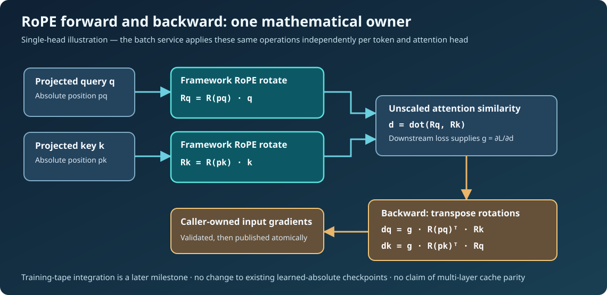

Learning objectives
After this lesson, you should be able to derive the reverse-mode gradient of a rotary positional transform, distinguish a rotation's transpose from a second forward rotation, relate a scalar attention dot product to the gradients of its query and key, and explain why a numerical gradient check must precede integration into Umicom Framework's training tape.
1. Why position encoding must be differentiable
The previous two lessons examined inference: a query sees keys rotated at their original absolute positions and the single-block cache can keep previously projected rows after an old token leaves the context. Training requires a second direction of computation. The forward pass maps parameter-dependent projected queries and keys to attention scores; the backward pass must return the loss gradient through those rotations to the original projections. Without that derivative, a model could execute rotary attention but could not correctly train the query/key projection matrices.
In Umicom's educational decoder, learnable parameters and reverse-mode automatic differentiation belong to the Framework training tape. The new RoPE research code is a forward/adjoint mathematical boundary for later tape integration, not a substitute optimiser or a complete language model. The existing learned-absolute decoder and its checkpoints remain untouched.

2. Derive one rotary pair
For a two-channel vector [x, y], let c = cos(θ) and s = sin(θ). The forward transform is [x·c − y·s, x·s + y·c]. The angle depends on the absolute position and a configurable frequency schedule. Higher channel pairs rotate at progressively lower angular frequencies; a nonrotary tail passes through unchanged.
Forward:
[u] [ cos(θ) -sin(θ) ] [x]
[v] = [ sin(θ) cos(θ) ] [y]
Given upstream gradients du = ∂L/∂u and dv = ∂L/∂v:
∂L/∂x = du·cos(θ) + dv·sin(θ)
∂L/∂y = -du·sin(θ) + dv·cos(θ)
Backward: inputGradient = R(θ)ᵀ · rotatedGradientThe second matrix is the transpose of the first; because a rotation is orthogonal, the transpose is also the inverse. Accidentally applying the forward rotation again is a subtle bug: it may pass tests at position zero (where the angle is zero) but fail when actual token positions advance. Therefore the regression suite includes multiple nonzero positions and full rotary and partially rotary head widths.
3. Derive the scalar query/key gradient
A single unscaled attention similarity is d = dot(R(pq)·q, R(pk)·k). Here pq and pk are the absolute query and key positions, not ring-buffer slots. If a later loss contributes the scalar upstream gradient g = ∂L/∂d, the correct vector derivatives are:
∂L/∂q = g · R(pq)ᵀ · R(pk) · k
∂L/∂k = g · R(pk)ᵀ · R(pq) · qFor full attention, the surrounding operator also differentiates the 1/sqrt(headChannels) scale and softmax probabilities. This research module intentionally differentiates only the rotary dot and tensor rotation. It does not claim to implement softmax backpropagation or a complete transformer.
The new Framework function UmiAiTrainingRotaryDotBackward obtains the forward rotations and their adjoints from the existing rotary_position owner. It accumulates intermediate scaling in double precision, checks that the final values fit float32, and publishes both result vectors only after every calculation succeeds. Overlapping query-gradient and key-gradient output ranges are rejected because those two distinct results cannot coexist in the same storage.
4. Use the native C23 contract
#include "umicom/ai/training/rotary_training.h"
#include <stdint.h>
#include <stdio.h>
int main(void)
{
const UmiAiTrainingRotaryConfig cfg = {4U, 4U, 10000.0};
const float query[4] = {0.4F, -0.3F, 0.2F, 0.5F};
const float key[4] = {-0.1F, 0.4F, 0.8F, -0.2F};
float queryGradient[4] = {0};
float keyGradient[4] = {0};
double score = 0.0;
if (UmiAiTrainingRotaryRelativeDot(&cfg, query, key, 4U,
UINT64_C(21), UINT64_C(18), &score) != UMI_STATUS_OK)
return 1;
if (UmiAiTrainingRotaryDotBackward(&cfg, query, key, 4U,
UINT64_C(21), UINT64_C(18), 1.0,
queryGradient, 4U, keyGradient, 4U) != UMI_STATUS_OK)
return 2;
printf("unscaled similarity=%.7f, first query derivative=%.7f\n",
score, (double)queryGradient[0]);
return 0;
}The parameter 1.0 is an illustrative upstream gradient, not a learning rate. Real training supplies the gradient that the loss and softmax operator computed. The example uses fixed vectors to expose mathematics; it does not train weights or write checkpoints.
5. Check the derivative independently
Analytical differentiation can be wrong while producing plausible-looking numbers. A central finite difference estimates one gradient component without calling the backward function. Perturb the original q[i] by a small ε, call the production UmiAiTrainingRotaryRelativeDot for both perturbations, and estimate g·(score(q+ε)−score(q−ε))/(2ε). Compare it with the corresponding analytical component.
Float32 rounding means a very tiny perturbation may vanish when added to an input. The bounded regression uses ε = 0.001, a documented absolute tolerance and a matrix of head widths, rotary widths, frequency bases and absolute positions. Checks cover derivatives with respect to both query and key. This is independent derivative evidence, not a comparison of two copies of the same backward code.
6. Ownership and correctness boundaries
All calls are synchronous, native C23 and memory-bounded. The existing decoder's learned absolute positions are never reinterpreted as RoPE. The operation does not read secret keys, invoke an external model, sample tokens or mutate global random state. Invalid inputs—including nonfinite gradients, oversized position indices or insufficient output capacities—leave caller buffers byte-for-byte unchanged.
The reverse-mode derivative addresses how gradients propagate, not when a multi-layer hidden state may be reused. Later transformer layers can depend on tokens that have left the sliding window. RoPE alone does not prove their cache remains valid under context eviction; that question requires separately qualified layer-specific semantics.
7. Practical exercises
- At angle zero, compute both the forward and adjoint transforms for the vector
[2, −1]. Why is testing only this position inadequate? - For a two-channel rotation with
cos(θ)=0andsin(θ)=1, calculate the backward result for upstream gradient[3, 4]. - Use two fixed query/key vectors and change both absolute positions by the same offset. Why should the rotary dot remain approximately invariant?
- Explain why the dot derivative above is not yet the derivative of a complete softmax attention block.
- Identify who owns projected tensors, gradient buffers, trained weights and checkpoint files in a future Umicom Studio AI assistant.
Key lesson: trainability requires an independently checked transpose-gradient operator, not merely an inference-time position transform.